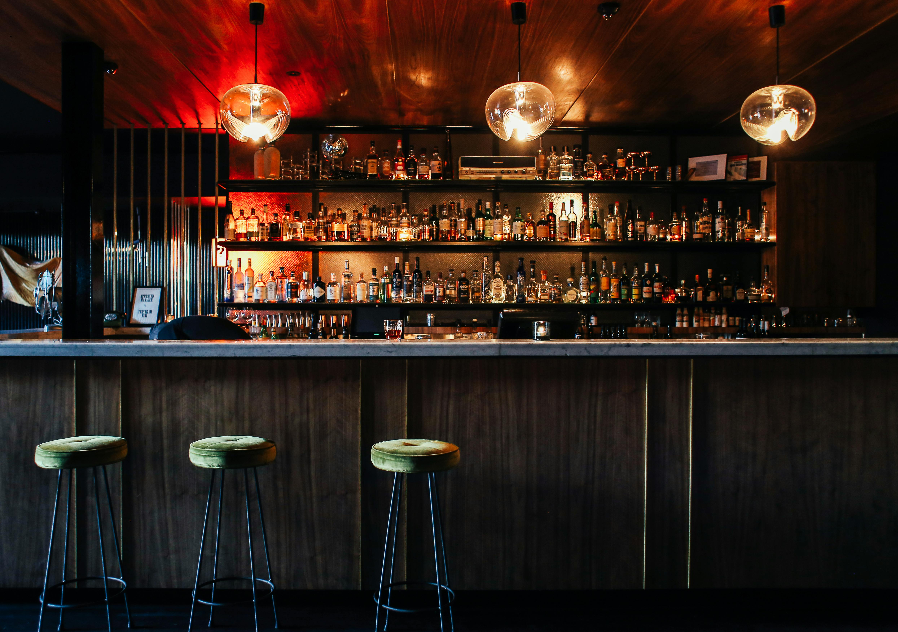
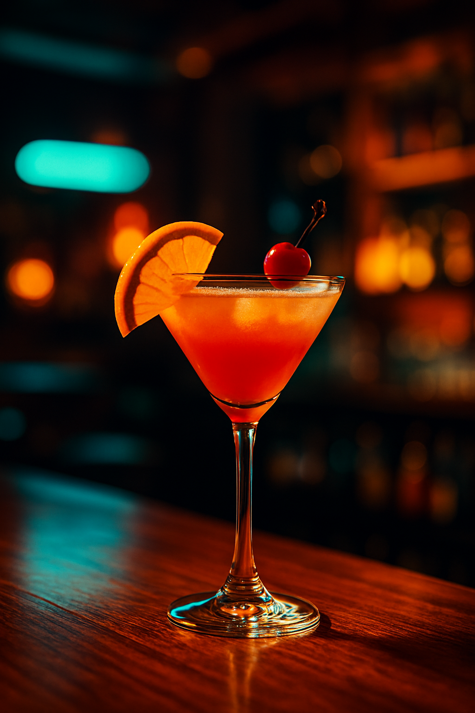

Galerie



Die Bar & Lounge Interlaken steht für stilvolle Atmosphäre, herzlichen Service und besondere Momente. Unser Team verwöhnt Sie mit kreativen Cocktails, ausgewählten Weinen und köstlichen Snacks. In unserer modernen Lounge können Sie den Alltag hinter sich lassen und bei entspannter Musik neue Energie tanken.
Adresse: Musterstrasse 1, 3800 Interlaken, Schweiz
Telefon: +41 00 000 00 00
E‑Mail: info@erotiklub-interlaken.ch
Öffnungszeiten: Montag – Sonntag, 17:00 – 02:00 Uhr